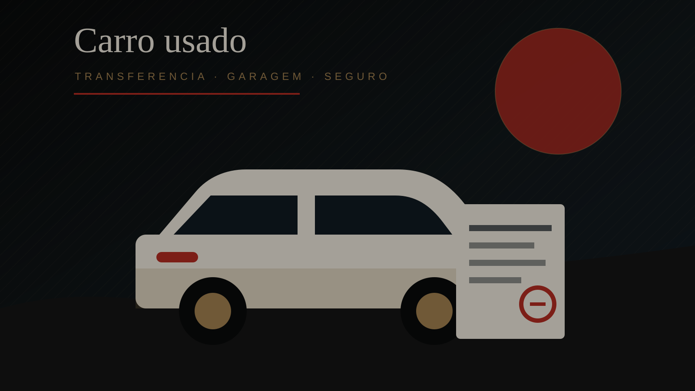

Comprar um carro usado no Japão não termina quando você escolhe o modelo. A parte decisiva costuma vir depois: transferência, garagem, inspeção, imposto e seguro.
Transferência de propriedade
Quando o veículo muda de dono, é necessário regularizar o registro. Em lojas, parte do processo pode ser intermediada. Em compra particular, a responsabilidade documental aumenta.
Garagem e endereço
Em muitas situações, o comprador precisa comprovar local de estacionamento. O certificado de garagem, conhecido como shako shomei, mostra que existe espaço adequado para guardar o veículo.
Shaken, imposto e custo real
O shaken, inspeção obrigatória do veículo, é um dos custos que mais muda a conta. Um carro barato pode ficar caro se a inspeção estiver próxima ou se houver manutenção pendente.
Seguro obrigatório e voluntário
O seguro obrigatório existe, mas sua cobertura é limitada. Muitos motoristas contratam seguro voluntário para ampliar proteção em danos materiais, responsabilidade civil e colisão.
Fontes consultadas
- JAF: Buying and selling a car in Japan
- Ministry of Land, Infrastructure, Transport and Tourism
- National Police Agency